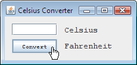

Pregunta 1: Cuando creamos este nuevo proyecto, dejamos la casilla de verificación "Crear Clase
Main" deseleccionada. ¿Porqué?
Respuesta 1: Dejamos esta casilla de verificación deseleccionada porque CelsiusConverterGUI
es el punto de entrada principal de la aplicación.
Pregunta 2: La _____ contiene todos los componentes ofrecidos por la IPA de Swing.
Respuesta 2: Paleta
Pregunta 3: ¿Cuál es el objetivo del Área de Diseño?
Respuesta 3: El Área de Diseño es donde visualmente organiza los diversos componentes de la IGU de la
aplicación. Esto recorta el tiempo de desarrollo porque todo el código de la disposición de la aplicación es
autogenerado.
Pregunta 4: Explique la diferencia entre las pestañas de Fuentes y Diseño.
Respuesta 4: Estas pestañas ofrecen dos vistas diferentes de la misma aplicación. La pestaña de Diseño
muestra cómo se ve la aplicación, y la pestaña Fuente muestra su código fuente. Algunas porciones de la pestaña
fuente son autogenerados y no directamente editables por el usuario.
Pregunta 5: Nombre algunas ventajas de editar un objeto con el Editor de Propiedades (en lugar de
editarlo directamente en el código fuente).
Respuesta 5: Usando el editor de propiedad elimina errores de escritura, la modificación accidental del
código equivocado, y ofrece una lista de todas las propiedades expuestas por un objeto particular.
Pregunta 6: Esta lección usó objetos Swing de tres tipos diferentes. ¿Cuáles eran ellos?
Respuesta 6: JLabel, JButton, y JTextField
Pregunta 7: Describa el proceso para establecer dos componentes al mismo ancho en el Área de Diseño.
Respuesta 7: Seleccione los dos componentes objetivo con el ratón mientras pulsa a la vez la tecla
Mayúsculas; esto realzará cada uno de ellos mostrando que están seleccionados. Ahora hacemos click derecho
con el ratón (Tecla de Control más el click del ratón para los usuarios de Mac) y seleccionamos Mismo Tamaño
-> Misma Anchura. Los componentes tendrán ahora el mismo ancho.
Abajo hemos modificado la aplicación para usar la fuente DialogInput, y hemos cambiando el cursor
a un cursor mano.

Una Aplicación CelsiusConverter modificada.